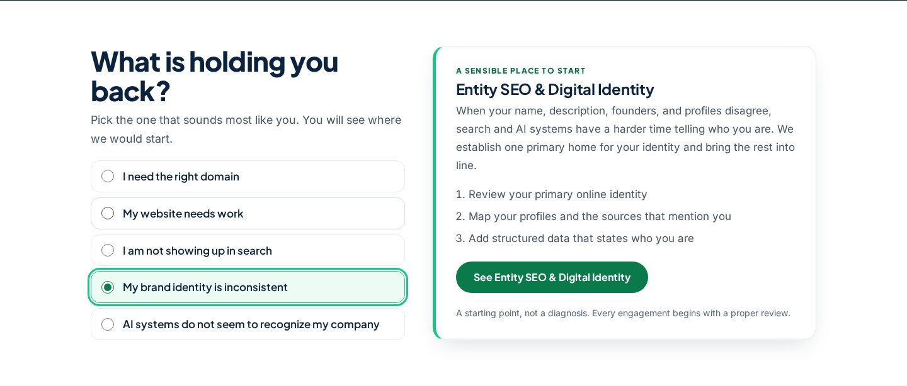
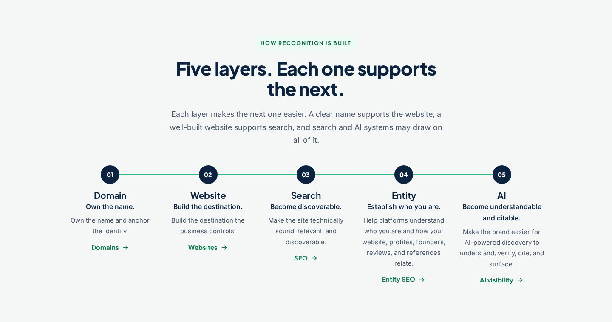
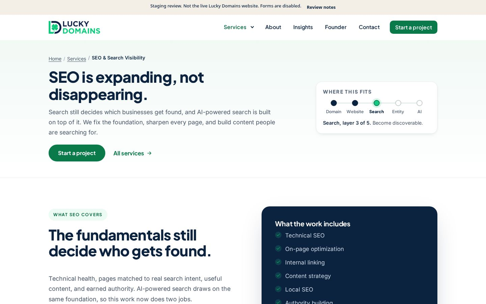
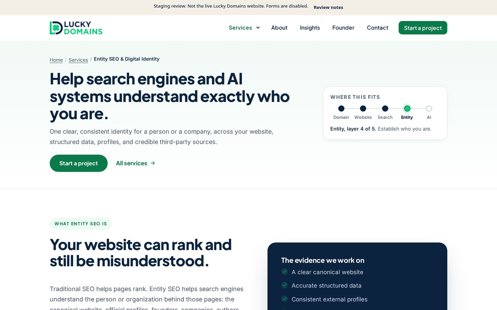
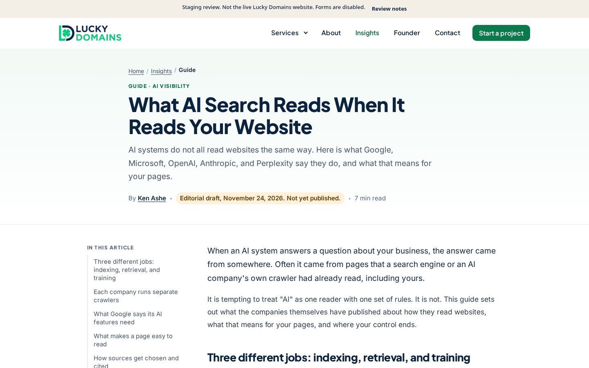
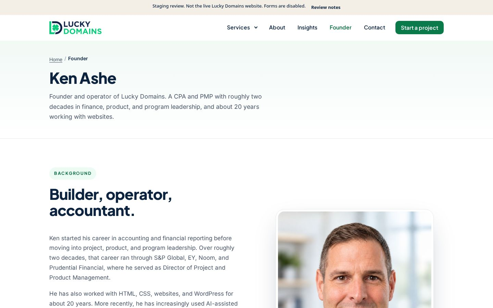
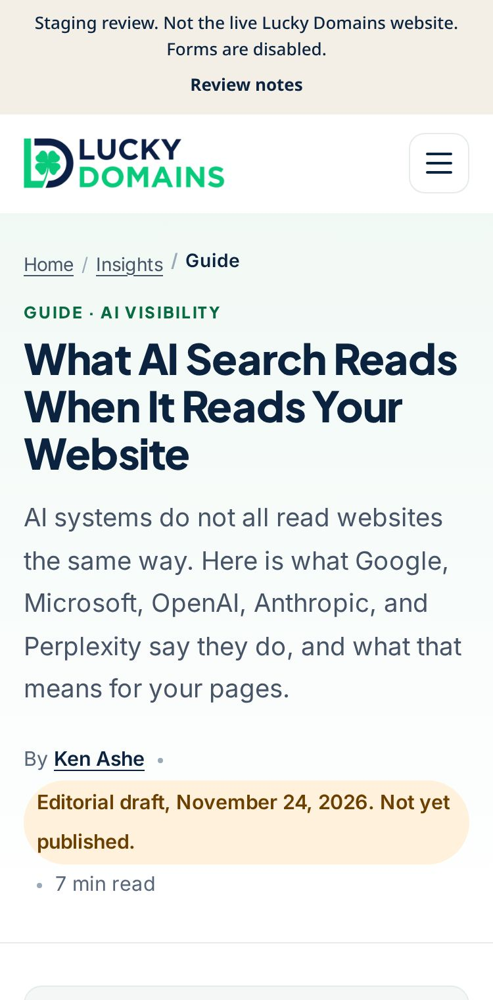
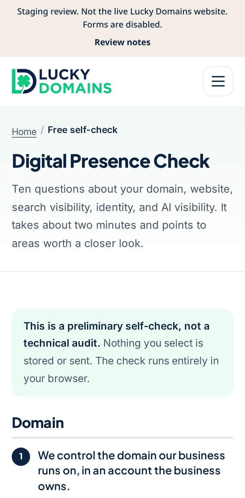

Production candidate · Final pre-launch review · November 25, 2026
The new Lucky Domains site, staged for approval
This is the actual production candidate, exported from the branch digital-presence-production-candidate at commit 187159161f. It is not another design concept. Nothing here is live on LuckyDomains.io, and nothing will be until Ken approves it.
Open the staged siteRead the five articlesDigital Presence Check
Lucky Domains draft pull requestKenAshe.ai draft pull request
The live LuckyDomains.io and KenAshe.ai sites were not changed. Both pull requests are drafts and unmerged. Staging pages are noindex, the contact form is disabled here, and nothing is collected.
Waiting on Ken
- Approve the final text of each of the five articles.
- Approve the byline, By Ken Ashe.
- Choose the launch day. All five articles take that date.
- Complete the Safari check on the MacBook and the iPhone.
Nothing else is outstanding. The design, structure, positioning and implementation are approved, and no further design work is planned.
Every staged page
Pages
Insights articles
- What AI Search Reads When It Reads Your Website
- When to Fix a Website and When to Rebuild It
- Entity SEO for Founders: One Name, Many Profiles
- How a Private Domain Purchase Actually Works
- Can Domains Become the Identity Layer for AI Agents?
Legacy redirect stubs
How to review
- Start on the home page and use the site as a visitor would.
- Read each article in full. They are the largest new piece of writing.
- Try the site on your own phone, and in Safari.
- The form shows a notice here and sends nothing.
What changed from the approved design
The design is the approved one. These are the differences between the refined concept and this candidate.
- Ported into the production repository as plain HTML, one stylesheet and one script. No build step, no framework.
- Production URLs: the founder page stays at /founder/ken-ashe/ and the domain service lives at /services/domain-acquisition/. Every existing URL is kept.
- Review banners, concept labels and noindex removed from the source. Staging adds its own notice and noindex.
- The real contact form replaces the inert one: Web3Forms, the honeypot, validation, success and error states, and the mailto fallback, exactly as on the live site. Inquiry options now match the five services.
- Insights is a library of five complete articles. The planned-article cards and the Coming labels are gone.
- The services section explains three related services (SEO, Entity SEO, AI Visibility), not two.
- Each service page and the process page end with a Related reading list.
- The News page lists only the real June 2026 release. The sample announcement is removed.
- The sitewide footer no longer links to KenAshe.ai. The repository's rule keeps founder profile links on the founder page; KenAshe.ai is linked where it is the source.
- Full metadata on every page: unique title and description, canonical, Open Graph, and structured data.
One factual correction to the approved concept. It said the Autonomous SEO Agent maintains Lucky Domains profiles. The public build record does not say whose profiles it maintains, so the candidate describes it as an internal system the founder built and quotes the record's own figures (63 sites researched, eight profiles confirmed live, no SEO impact established).
Final content decisions, as applied
- SEO engagements: Growth SEO as a monthly package is removed everywhere. The engagement is named SEO Audits & Optimization: one-time audits, scoped implementation projects, and ongoing optimization and monitoring by agreement.
- AI Visibility: the approved explanation is kept. No first-party AI experiment is claimed. Founder commentary appears only on the Founder page, labeled as opinion.
- No portfolio: no Work navigation, case studies, logos, testimonials, or results. The test suite fails if any return.
- Founder: about 20 years working with HTML, CSS, websites, and WordPress, and more recently AI-assisted development. It is not described as professional software engineering. The four published items are approved: two TechRound pieces, the HackerNoon article, and the ProjectManagement.com article.
- Location: Berkeley Heights, New Jersey, on Contact, About, News, the footer, and in the Organization data.
- News: historical release untouched. No new announcement written.
- Articles: all five are kept, with the byline By Ken Ashe. They stay editorial drafts with no publication date, noindex and outside the sitemap, until Ken approves the text. All five then take the actual launch date.
- Digital Presence Check: unchanged from the approved version.
Final editorial pass, November 25
No article was rewritten. These are the corrections, by article. Every quotation in all five was checked against its source on November 25, 2026.
When to Fix a Website and When to Rebuild It
- The opening no longer says most disappointing websites do not need replacing. It says a disappointing site does not automatically need replacing.
- The five questions are introduced as practical guidance, not a validated scoring system, and the outcomes are worded as rules of thumb.
- "An address that does not change cannot be lost" is gone. Keeping an address lowers migration risk and does not remove it, with Google's own sentence on ranking fluctuations after any significant change.
- Softened: "the riskiest moment", "always larger than expected", "rarely works", "cheap and certain", and a claim about what most organizations aim for.
How a Private Domain Purchase Actually Works
- Escrow now reduces the central transaction risk. The text says what it does not cover: trademarks, the name's history, the price, and deals outside the service's process.
- A scope note near the top separates ICANN's rules for generic endings (.com, .net, .org) from country-code endings (.uk, .de, .io), quoting ICANN.
- The transfer-policy warning is dated: on November 25, 2026 the revised policy was still queued with no effective date.
- Factual correction: Escrow.com is now described in the words of its own page ("licensed as an escrow service", "regularly audited by each state's regulatory agency"). The earlier quoted phrase could not be confirmed there.
- Factual correction: the lookup tool sentence no longer gives a date for RDAP replacing WHOIS.
- Removed an unsupported claim about how often owners reply. Softened "the normal case", "most", "never send money", and "every time". Length kept.
What AI Search Reads When It Reads Your Website
- All crawler documentation was reread on November 25, 2026 and the article says so.
- OpenAI's sentence now carries its own qualifier: sites opted out of OAI-SearchBot "can still appear as navigational links".
- Google's Search generative AI control is described from its documentation: what it excludes, that content may be used when no control is applied, and that it does not affect model training or other parts of Search.
- Softened: "most confusion", "most AI companies", "none of this is exotic", and the claim that anyone citing selection rules is guessing.
Can Domains Become the Identity Layer for AI Agents?
- Proof of control is now separated from identity. Controlling a domain or a key shows who holds it. It does not show who the operator is in the real world, or that the operator is competent or trustworthy.
- The same distinction is applied to certificates and to ZeroHuman: the name shows where results come from, not who runs the service or whether to trust it.
- ZeroHuman's documented limits are all kept (no outside buyer as of November 20, 2026, Ken's own test buyer, no escrow, draft specifications), and that one is added.
Entity SEO for Founders: One Name, Many Profiles
- Removed an unsupported sentence about what founders ask for most.
- Softened absolutes about who is responsible, what most founders use, how systems weigh properties, and what can be done about a shared name.
Structured data and consistency corrections
- Founder page: the ProfilePage description now reads "Profile of Ken Ashe, CPA, PMP, founder and operator of Lucky Domains, a digital presence studio for the AI era." Its dateModified is November 25, 2026.
- One Organization record. The full Organization node appears on the home page, the founder page and the June 2026 press release. All three now carry the same description, topics and city-level address. Before this pass the founder page and the release still listed the old topics.
- The press release itself is untouched: headline, text, dates and NewsArticle data are exactly as published. Only the shared company record inside its structured data was brought up to date, the way the shared founder record already is.
- Articles refer to the shared founder record with the same URL it has everywhere else (kenashe.ai), and name the publisher. Before, the same record was given a second URL.
- The shared Ken Ashe Person record is unchanged and still byte-identical to the live copy on all three pages.
- SEO service data lists audits, technical reviews, scoped projects, strategy, and ongoing work by agreement.
- Sitemap dates: the five pages changed in this pass carry November 25, 2026. The others keep November 24, 2026.
- KenAshe.ai: every current description on the pull request branch was checked. Its only structured reference to Lucky Domains uses the same Organization identifier and no description, so nothing conflicts. Dated posts and the site-launch release were left alone.
- New tests fail the build if the Organization description, topics or address ever differ between pages, if a second company identity appears, or if the founder record is given a second URL.
Digest prompt, exact change
In the Digest prompt on KenAshe.ai, one clause changed. From: "a domain acquisition, brokerage, website-build, and white-hat SEO practice." To: "a digital presence studio for the AI era that offers website design and development, SEO, AI visibility, digital identity, and domain acquisition and brokerage." The subjects that trigger a mention, the example sentence, the five existing links, the link guardrail, the schedule and the models are unchanged. It is a separate commit in the KenAshe.ai pull request, so it can be dropped on its own. It could not be shadow-tested from the build environment; the pipeline's own tests give the same result before and after (73 pass, three files cannot load there).
Article inventory
Five complete articles. Every source was reopened on November 25, 2026, and every quotation was checked against it. Nothing in them is an invented client, statistic, quotation, or result.
| Article | What it covers | Principal sources | Uncertainties to know about |
|---|---|---|---|
| What AI Search Reads When It Reads Your Website Guide · AI visibility · 1,543 words | Separates search indexing, live retrieval, and model training, lists each company's published crawlers, sets out what Google says its AI features need and do not need, and ends with what an owner controls and does not. | Google Search Central (AI features, the generative AI optimization guide, generative AI controls, Google-Extended, JavaScript SEO, structured data), Bing Webmaster Guidelines and the AI Performance announcement, OpenAI, Anthropic, and Perplexity crawler documentation. | Google updated its generative AI controls page on November 24, 2026. The article now describes the Search Console control from that page, including that content may be used when no control is applied. No AI company other than Google documents whether its crawlers run JavaScript; the article says so and labels the one study it cites as secondary and from 2024. Recheck the crawler pages on launch day. |
| When to Fix a Website and When to Rebuild It Guide · Websites · 1,550 words | A decision framework: what is usually repairable, the signs the foundation is the problem, a comparison table, five deciding questions, how to protect search visibility in a rebuild, and what a rebuild will not fix. | Google Search Central (site moves, redirects, page experience, mobile-first indexing, helpful content), web.dev Web Vitals, W3C WCAG 2.2, and this repository's decision log for the first-party example. | Google has no documentation page on redesigns that keep the same URLs, so the article quotes its site-move guidance. The sentence that the late 2026 redesign kept every address becomes true only when this candidate launches. |
| Entity SEO for Founders: One Name, Many Profiles Explainer · Digital identity · 1,542 words | Why a founder's identity fragments, choosing one authoritative page, consistency, Person and Organization structured data, bylines, sharing a name, what Google says about Knowledge Panels, and why independent recognition cannot be self-written. | Google Knowledge Panel Help, Google Search Central (ProfilePage, Organization, Article author markup, structured data guidelines, helpful content), Schema.org, and Google's 2012 Knowledge Graph announcement. | Google publishes no method for telling apart people with the same name; the article says so. The first-party example describes Ken's Person record (one identifier, 19 profile links, four credentials) and claims no Knowledge Panel. |
| How a Private Domain Purchase Actually Works Explainer · Domains · 1,823 words | A general guide, separate from the Lucky Domains process page: what taken means, finding the holder, trademark and history checks, valuation, anonymous outreach, negotiation, escrow, the transfer, common mistakes, and when to walk away. | ICANN (lookup, RDAP, Registration Data Policy, Transfer Policy, domain life cycle, UDRP, registrant responsibilities), WIPO, USPTO, Escrow.com's own documentation, the Internet Archive, and Google's guidance on old domains. | ICANN's Board adopted a revised Transfer Policy in June 2026. On November 25, 2026 it was still in ICANN's implementation queue with no effective date. The article states the current 60-day rules, dates that check, and separates generic endings from country-code endings. Recheck on launch day. Not shortened, by the owner's decision. The scope note and the escrow limits added about 190 words, so it is now about 1,800. |
| Can Domains Become the Identity Layer for AI Agents? Research · Agent identity · 1,598 words | The existing research note, expanded and kept exploratory: what a domain already does, what an agent identity would need, the domain-anchored proposals and the blockchain naming proposals, Ken's two experiments and their limits, and what is unresolved. | The two KenAshe.ai build records, the A2A specification, the MCP Registry documentation, the IETF working group and two Internet-Drafts, ENS documentation, ERC-8004, x402, NIST, and the OpenID Foundation. | Almost everything cited is a draft, and several expire in 2027. All six claims about ZeroHuman and the earlier experiment were rechecked against the build records and on-chain on November 24, 2026. The latest dated statement that no outside agent has bought is November 20, 2026. |
How to add, edit and publish an article: docs/INSIGHTS.md in the production repository.
URLs
| URL | Status |
|---|---|
| /, /services/, /services/entity-seo/, /how-we-buy-domains/, /about/, /founder/ken-ashe/, /contact/, /news/, /news/website-relaunch/ | Preserved. Same URL, same file path. |
| /services.html, /about.html, /contact.html, /how-we-buy-domains.html, /news/website-relaunch.html | Preserved, unchanged. Legacy redirect stubs. |
| /services/website-design/, /services/seo/, /services/ai-visibility/, /services/domain-acquisition/ | New service pages. |
| /tools/digital-presence-check/ | New. There is no /tools/ index page until there is a second tool. |
| /insights/ and five article URLs under it | New. |
| /work/, /portfolio/ | Never created. |
The complete map is docs/URL_MAP.md.
SEO migration approach
- No existing URL changes, so no redirects are needed at launch.
- The five legacy .html redirect stubs are byte for byte unchanged and stay crawlable.
- The /services/ page keeps the #websites, #seo, #domains and #selling anchors, because KenAshe.ai posts link to them through the services.html stub.
- Every page has a self-referencing canonical on https://luckydomains.io with a trailing slash, matching its internal links and its sitemap entry.
- The sitemap lists every indexable page. An article joins it when it is published.
- robots.txt is unchanged and blocks no duplicate URL forms.
- Structured data: Organization, WebSite, ProfilePage and the shared Person on the home page; Service, WebPage and BreadcrumbList on each service page; Article and BreadcrumbList on each article. The shared Person node is byte-identical to the live copy.
- Staging URLs appear nowhere in the source. The test suite checks for them.
Test results
- All results below were produced on November 25, 2026, after the final editorial and structured-data pass, on the candidate at commit 1871591.
- Production test suite (tests/test_site.py): all 3,268 checks pass, and CI is green on the pull request. New checks cover one Organization description, topic list and address across pages, a single URL for the shared founder record, the ProfilePage description, article author and publisher references, and the engagement name.
- The launch mode (tests/test_site.py --launch) fails on purpose, on one check: five articles are still drafts. A rehearsal on a scratch copy ran the final publication command, including a corrected date, and passed all 3,273 checks.
- Editorial: every quotation in the five articles was checked against the text of its source page. Three could not be matched by script because the page is built in the browser or splits the sentence across links; each was confirmed by reading the page.
- Accessibility: axe-core (WCAG 2.1 A and AA, plus best practices) reports no issues on any of the 21 pages at 375 and 1440 pixels.
- Responsive: Chromium and Firefox at 320, 375, 390, 768, 1024 and 1440 pixels on all 21 pages. No horizontal overflow, console errors, broken images, missing alt text, text under 12 pixels, or touch targets under 24 pixels.
- Layout shift on a fresh load: 0 on every page, desktop and phone.
- Interactions: 134 scripted checks pass in Chromium and Firefox: keyboard order and focus, menus and Escape, the presence map by click, touch and keyboard, the Pause control, the diagnostic, the five layers, the Digital Presence Check (including that it stores and sends nothing), the Insights library, the article contents list, reduced motion, and no JavaScript.
- Contact form: on staging it is disabled and sends nothing. On the candidate source, validation, the ?need= prefill, the honeypot, the mailto fallback and the Web3Forms request were verified with the request intercepted, so nothing was sent.
- URLs: all five legacy .html stubs redirect to their directory URLs, services.html#seo lands on the SEO card, canonicals match the sitemap, and no existing URL changed.
- Structured data: every block parses, the shared Person record is byte-identical to the live copy on all three pages, and the Organization record is identical wherever it is described.
- Third parties: a page view on the candidate makes no third-party request.
- Links: every internal link resolves. All 134 external links across the review site answer, apart from two sites that refuse automated requests (LinkedIn, and ProjectManagement.com, which loads normally in a browser). Four source links that had started redirecting now point at their destinations.
- KenAshe.ai pull request: the Vercel preview build is the build check. The Digest pipeline's own tests give the same result before and after the prompt change.
Load measurements
| Page | First paint | Main content | Layout shift | Blocking time | Transfer | Requests |
|---|---|---|---|---|---|---|
| Home | 0.8 s | 0.8 s | 0.00 | 67 ms | 208 KB | 8 |
| Services | 0.8 s | 0.8 s | 0.00 | 55 ms | 194 KB | 9 |
| SEO service page | 0.8 s | 0.8 s | 0.00 | 69 ms | 194 KB | 9 |
| Digital Presence Check | 0.8 s | 0.8 s | 0.00 | 35 ms | 240 KB | 8 |
| Insights | 0.8 s | 0.9 s | 0.00 | 30 ms | 239 KB | 8 |
| Article | 0.8 s | 0.8 s | 0.00 | 50 ms | 198 KB | 8 |
| Founder | 0.8 s | 0.8 s | 0.00 | 23 ms | 243 KB | 8 |
| Contact | 0.7 s | 0.7 s | 0.00 | 10 ms | 239 KB | 8 |
Laboratory measurements, not Lighthouse scores and not field data. Measured on the published staging copy on November 24, 2026, in Chromium through the DevTools Protocol; the November 25 changes were to text and metadata only. Each figure is the median of three cold loads. Phone figures use a 412 by 823 viewport with 150 ms latency, 1.6 Mbps down and the processor slowed four times, close to Lighthouse's mobile preset. Transfer and requests are for a first visit on desktop, with nothing cached, and include one staging-only script. No page made a third-party request.
Limits
- Safari is not verified. WebKit could not start in the build environment. The Safari checklist above is for Ken to run on a MacBook and an iPhone.
- There are no Lighthouse scores, and that is not a launch blocker. Lighthouse cannot be installed in the build environment and the PageSpeed API was rate-limited. The load figures above are laboratory measurements taken directly in Chromium. They are not Lighthouse scores and not field data.
- Real contact form delivery, the www redirect, and the 404 page for missing paths exist only on the live domain and are checked after launch.
- The Digest prompt change could not be shadow-tested from the build environment.
Safari check for Ken
About ten minutes, on this staging copy. Note the page, the device and what you saw if anything looks wrong.
MacBook, Safari
- Home: fonts look right, the navy hero fills the width, and the map settles from scattered to connected.
- Click a signal, click it again, switch Fragmented and Recognized, press Pause.
- Press Tab from the top: a green outline shows on each stop, and Escape closes the Services menu.
- Choose each "What is holding you back?" option: an answer appears beside it and the page does not jump.
- Scroll to the five layers: the line draws once and nothing sticks.
- Open a service page, then the Digital Presence Check: answer a few and use Clear answers.
- Open an article: the contents list stays beside the text and the table scrolls in its own box.
- Narrow the window to phone width: nothing scrolls sideways.
iPhone, Safari
- Home fits without sideways scrolling, in portrait and landscape.
- Open the menu, open Services inside it, close it.
- Tap a signal on the map and tap Pause. Nothing is cut off.
- Tap a "What is holding you back?" option: the answer appears just below.
- Digital Presence Check: the three answer buttons are easy to tap and the result updates.
- One article: comfortable to read, contents box above the text, wide table scrolls by itself.
- Contact: fields do not zoom the page. Send shows a notice and sends nothing here.
- Turn on Reduce Motion and reload the home page: the map appears connected and nothing moves.
Launch blockers
- Ken's approval of the final article text and the byline.
- Ken's choice of launch day.
- The Safari check on a MacBook and an iPhone. WebKit could not run in the build environment.
- After launch only: one real contact form submission from a browser, the www redirect, the legacy stubs, and the 404 page on the live domain.
Production deployment and rollback
Prepared, not executed. The full procedures are in docs/RUNBOOK.md, sections 9 and 10.
- Ken approves the articles, the byline and the launch day, and completes the Safari check.
- Bring the branch up to date with main and re-export staging if anything changed.
- On launch day, reopen the time-sensitive sources (ICANN transfer policy status, Google's AI controls, the crawler pages) and correct the articles if anything moved.
- Run the final publication command (below). It dates all five articles with the launch day and runs the launch tests.
- Commit and push. CI must be green on the pull request.
- Record the commit that is live (the rollback point). When the candidate was prepared it was efed1de.
- Ken marks the pull request ready and merges it with a merge commit, the same day. GitHub Pages redeploys within minutes.
- Run python3 scripts/verify_live.py, then check the live site in Safari and Chrome: navigation, the map, the check, one article, the legacy stubs, the 404 page.
- Send one real contact form message from a browser and confirm it arrives.
- Resubmit the sitemap in Search Console.
- Only then merge the KenAshe.ai pull request.
Final publication command
Run on launch day, on the branch, before the merge:
python3 scripts/articles.py publish --all --date "$(TZ=America/New_York date +%F)" \
&& python3 tests/test_site.py --launchIt removes the draft marking from all five articles, writes the launch date into each byline and its structured data, adds the articles to the sitemap, and then runs the launch tests. If the merge slips to another day, run it again with --redate after the date.
Rollback
GitHub Pages serves whatever main contains, so a rollback is one commit: revert the merge commit with git revert -m 1, run the tests, and push. Do not force push, delete CNAME, or touch DNS. The old pages are live again within minutes. That is why the KenAshe.ai links are merged last.
What staging changes, and nothing else
- base path prefix
- noindex,nofollow,noarchive on every page
- head canonical and social URLs point at staging
- presence-map links prefixed
- staging notice bar
- contact form disabled (key removed, endpoint replaced, submit blocked)
- CNAME, robots.txt, sitemap.xml, docs, tests, scripts and assets/source omitted
Exported by tools/dp_export.py from 46 source files. The export refuses to run from main or with uncommitted changes, and checks each protection before it finishes. Staging cannot show the real contact form delivering mail, the www redirect, or the 404 page being served for a missing path.
Screenshots























Full-length captures: home, desktop, home, mobile, article, desktop, article, mobile.